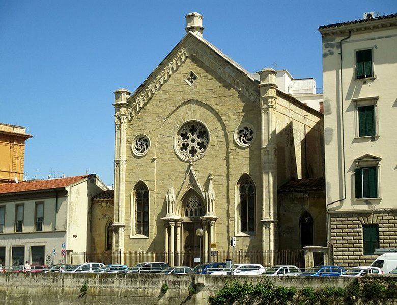

Il percorso
Livorno vista dal mare
"Livorno è un'affascinante città della Costa Tirrenica, caratterizzata da atmosfere vivaci, divertenti e cosmopolite."

Il tour parte dall'imbarcadero di Scali delle Pietre 6, davanti alla Fortezza Nuova, e percorre i Fossi Medicei — i canali storici scavati nel XVI secolo per volontà dei Medici per collegare il porto al cuore della città.
A bordo, la guida storica racconta la Livorno dei mercanti e dei marinai: una città cosmopolita dove convivevano olandesi, ebrei, greci e armeni — ognuno con il suo quartiere, la sua chiesa, il suo magazzino sul canale.
Il percorso dura circa 50 minuti. Non è richiesta nessuna preparazione fisica — il battello è accessibile e dotato di tendalino parasole e nebulizzatore per i mesi più caldi.
Prenota il tour
Tappa 01
Piazza della Repubblica
220 metri di larghezza: definita piazza, è in realtà il ponte più largo d'Europa.

Tappa 02
Mercato Centrale
Le cantine storiche sul canale, un tempo usate per trasportare il pesce direttamente dall'acqua al mercato.

Tappa 03
Chiesa degli Olandesi
Testimonianza della comunità mercantile olandese che si stabilì a Livorno nel '600.

Tappa 04
Palazzi Ottocenteschi
Le residenze delle grandi famiglie straniere che fecero la fortuna commerciale di Livorno nell'800.

Tappa 05
Cantina del Palio Marinaro
Antico magazzino affacciato sul canale, legato alla tradizione del Palio Marinaro livornese.

Tappa 06
Porto e Faro
Il cuore marittimo di Livorno: il porto da cui partivano le grandi navi mercantili verso il Mediterraneo.

Tappa 07
Monumento dei Quattro Mori
Il simbolo di Livorno, dedicato a Ferdinando I de' Medici: quattro schiavi mori incatenati ai piedi della statua.

Tappa 08
Fortezza Vecchia
Fortification del 1500, simbolo della famiglia Medici, con prigioni sotterranee ancora visitabili.

Tappa 09
Quartiere Venezia
La piccola Venezia livornese: un'isola artificiale concepita nel '600, attraversata da canali e ponticelli.

Tappa 10
Fortezza Nuova
Il punto di partenza e di arrivo del tour — la fortezza medicea che domina il centro storico di Livorno.